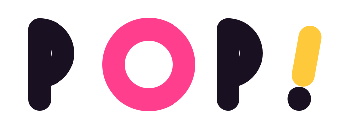
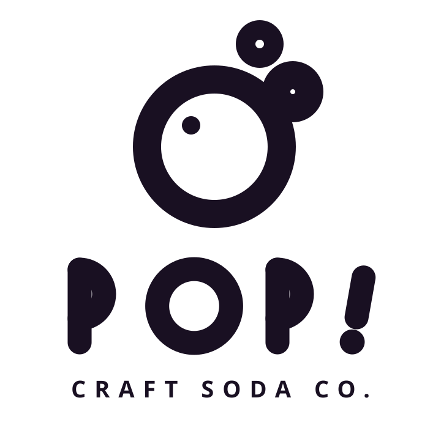

Small-batch craft soda for people who enjoyed the fun part of growing up — and kept it.
POP! is a small-batch craft soda made with real fruit and just enough sugar. The identity had to taste like the first sip: loud, cold, refreshing, a little mischievous — the opposite of the beige "adult beverage" shelf it sits next to.
Every layout leads with cream and ink, then lets one hot accent do all the shouting. Chunky borders, hard shadows, zero gradients-for-the-sake-of-gradients.
The wordmark is drawn from circles and round-capped strokes — the O is literally a bubble. The exclamation mark leans 10° and bounces in motion, because nothing about this brand stands still.


A single unit — x, the stroke — sets cap height, counter size, letter spacing and clearspace. Minimum digital width 120 px, print 30 mm.
Cream and ink carry 85% of every layout. Accents are punctuation — use one per composition, never three at once. CMYK conversions live in the upload kit README.
Drink the fizz.
ABCDEFGHIJKLMNOPQRSTUVWXYZ 0123456789 &?!
Real fruit, real sugar, zero pretense — that's the whole recipe. DM Sans carries body copy and labels, set at 17–20 px on screen or 9–11 pt in print, never below 400 weight.
Colour carries flavour recognition before the label is even read: pink guava, yuzu blast, grape escape. The stacked lockup sits high on the can so it survives shelf occlusion.
Chief Fizz Officer
jo@drinkpop.com
drinkpop.com · @drinkpop
Drink the fizz.
POP! Craft Soda Co. is a fictional brand built as a demo identity kit.
Art direction, identity & packaging: designed in code — HTML, CSS & SVG.
Type: Fredoka + DM Sans · Thanks for scrolling.